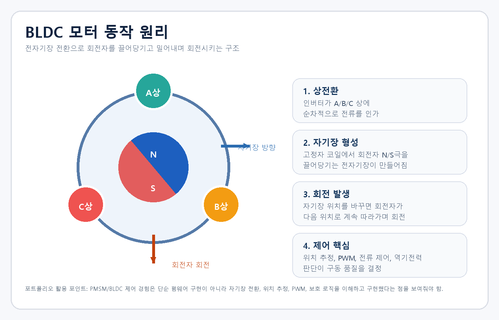
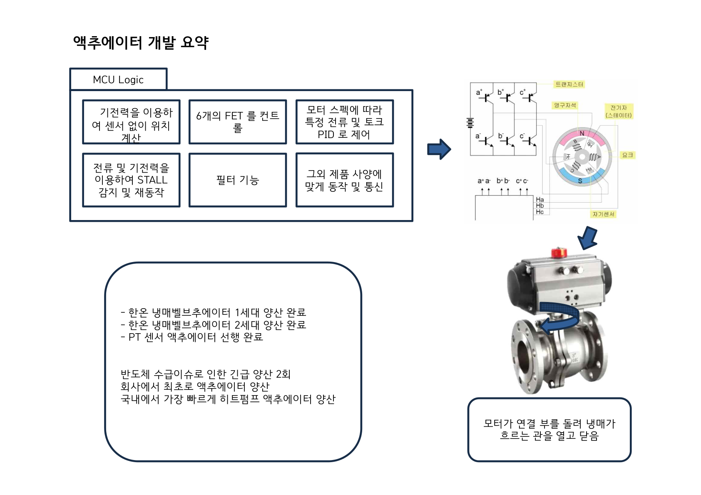
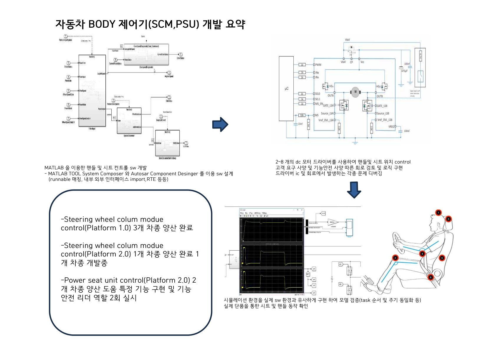
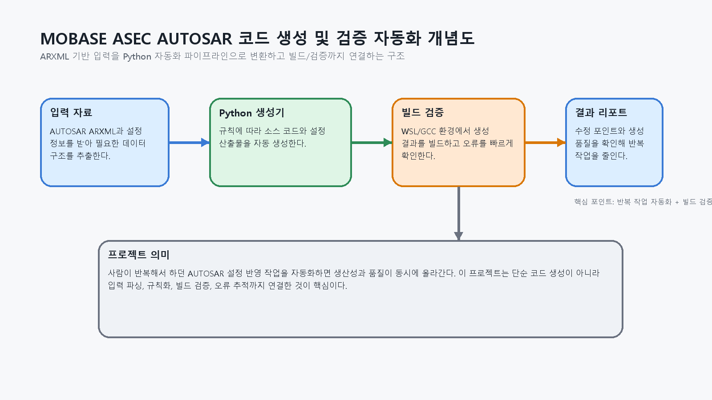
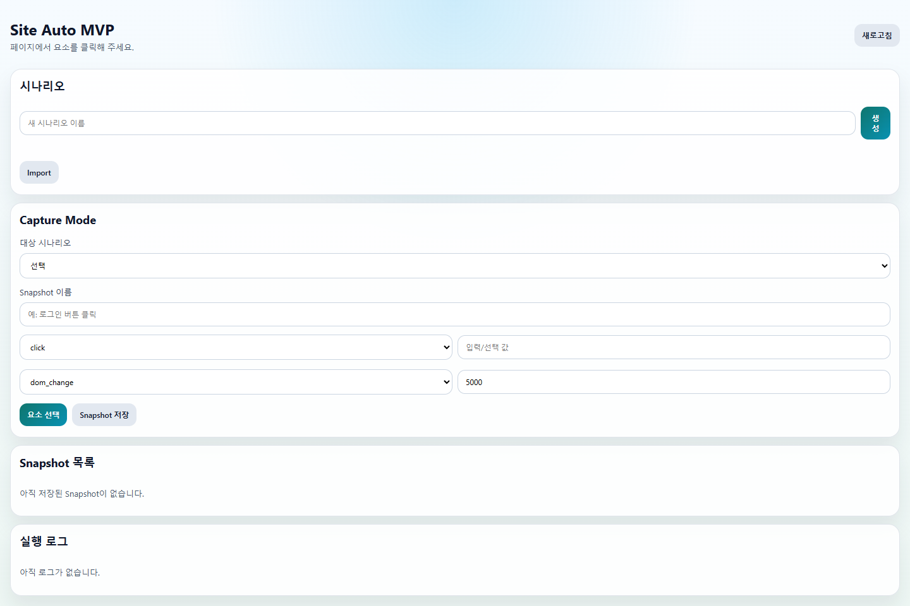
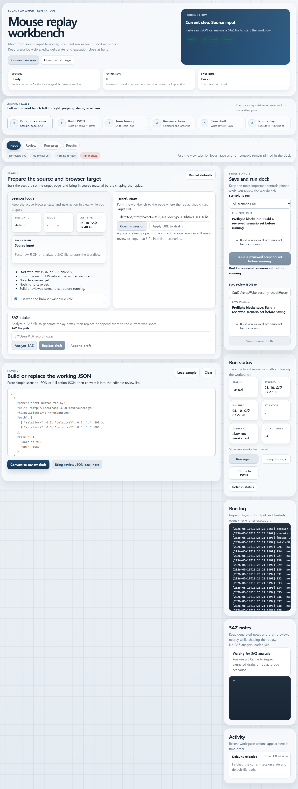

제어 원리 이해
BLDC/PMSM/DC 모터 제어를 단순 기능 구현이 아니라 자기장 전환, 위치 추정, STALL 대응, PI 제어, 보호 로직 관점에서 다뤄왔습니다.
Automotive Embedded Software Engineer
AUTOSAR, MBD, 기능안전, BLDC/PMSM/DC 모터 제어를 실무에서 수행했고, 최근에는 Python 기반 코드 생성과 검증 자동화까지 확장하고 있습니다.

SUMMARY
BLDC/PMSM/DC 모터 제어를 단순 기능 구현이 아니라 자기장 전환, 위치 추정, STALL 대응, PI 제어, 보호 로직 관점에서 다뤄왔습니다.
SCM, PSU, 통합제어기, AUTOSAR, MATLAB/Simulink, 기능안전 요구사항까지 포함한 제어기 개발 문맥을 경험했습니다.
ARXML 분석, Python 툴링, WSL/GCC 검증 환경, 반복 생성 작업 자동화까지 연결하며 생산성과 품질을 함께 높이는 방향으로 확장하고 있습니다.
CAREER
아키텍처 설계실 · AUTOSAR 코드 생성 / 검증 자동화
전장 SW 설계팀 · SCM / PSU / 통합제어기 · 기능안전 대응
회로2팀 SW담당 · 냉매 밸브 액추에이터 제어
WORK PROJECTS
차량 냉매 흐름을 제어하는 액추에이터용 SW를 개발하며, 모터 구동 원리와 제어 이론을 실제 제품 동작과 양산 대응에 연결한 경험입니다.

SCM, PSU, 통합제어기 선행 과제를 수행하며 사용자 편의 제어, AUTOSAR 기반 개발, 문서화, 기능안전 대응을 함께 다룬 프로젝트입니다.


CURRENT / PERSONAL PROJECTS
추천 엔진과 자동매매 실행 엔진을 분리하고, readiness 체크와 운영 로그를 통해 잘못된 주문을 방지하는 추천·분석·자동매매 운영 워크벤치입니다.


학생 펌웨어를 Web Worker에서 실행하면서, UART 입력부터 모터 피드백까지 연결해 학습할 수 있는 교육용 임베디드 시뮬레이터입니다.

Discord 채널에서 로컬 Codex 프로젝트를 제어하고, 세션 재개, 승인 UI, 큐잉, 미디어 업로드까지 연결한 원격 협업 컨트롤러입니다.

Chrome Extension 사이드패널에서 DOM snapshot을 저장하고 replay / repair / permission recovery를 통해 실제 탭 자동화를 수행하는 로컬 UI-first MVP입니다.

경로 기반 시나리오를 마우스 리플레이 가능한 액션으로 변환하고, 실제 브라우저 세션에서
isTrusted 동작까지 검증하는 Playwright 기반 워크벤치입니다.

CHANNEL STRATEGY
실제 추가 항목 기준으로 경력기술서, 자기소개서, 포트폴리오 문서와 URL 등록을 우선합니다.
실제 이력서 항목 기준으로 경력, 희망 직무, 스킬, 자기소개서, 포트폴리오 연결성을 맞춰 운영합니다.
공개 보도와 서비스 성격을 바탕으로 압축형 헤드라인, 경력 요약, 키워드 중심 전략으로 운영합니다.
실제 프로필 섹션 기준으로 Headline, About, Experience, Featured, Skills를 영문 중심으로 정리합니다.
프로젝트별 장문 기록과 검색 유입을 담당하는 아카이브 채널로 운영합니다.
사람인, 잡코리아, LinkedIn 항목 구조는 공식 도움말 기준으로 다시 확인했고, 리멤버는 공개 서비스 특성을 바탕으로 운영 전략 수준에서 정리했습니다.